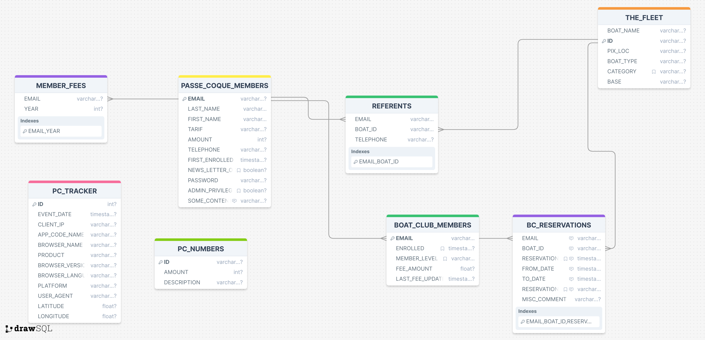

Debug PHP & Co..
Documentation du Back-End
Les tatillons vondront bien excuser mes anglicismes... Il y a des termes techniques dont je ne connais pas l'équivalent francais,
et il faut qu'on avance.
Certains paragraphes peuvent ne pas concerner tout le monde, ceux pour qui ils ne sont pas indispensables passeront à la suite.
Schéma de base
Le code du schéma de la base est écrit en SQL (Structured Query Language), qui est un standard,
compris et implémenté par l'hébergeur du site, le RDBMS (Relational Data Base Management System - ou Système de Gestion de Base de Données Relationnelle)
étant MySQL.
On peut consulter le schéma ICI.
Voici un diagramme qui le représente, au format UML (Unified Modeling Language), qui est un standard aussi.
Même le plus barjo des savants fous est censé connaître ce genre de choses.

Deux entités émergent, qui sont à l'origine de plusieurs relations avec les autres entités :
- PASSE_COQUE_MEMBERS
- THE_FLEET
On peut lire dans le diagramme ci-dessus que :
- Un
REFERENT doit être présent dans PASSE_COQUE_MEMBERS
- Un
REFERENT fait référence à un bateau de THE_FLEET
- Un
BOAT_CLUB_MEMBER est aussi présent dans PASSE_COQUE_MEMBERS
- Une
RESERVATION fait référence à un BOAT_CLUB_MEMBER et à un bateau de THE_FLEET
Les lignes qui relient les entités sur le schéma témoignent des cardinalités des contraintes, one-to-one, one-to-many, etc (ceci
méritera plus de détails pour ceux pour qui c'est nouveau et que ça intéresse).
Attention ! Ces contraintes d'intégrité (de type FOREIGN KEY) utilisent ici l'option ON DELETE CASCADE. Ceci signifie
par exemple que si on supprime un bateau de la base de données, toutes les réservations le concernant disparaitront avec.
De même pour un membre du boat club, et ainsi de suite.
Admin menu
À partir de votre Espace Membre, ceux qui disposent du privilège 'admin' peuvent accéder à ce menu.
On peut aussi y accéder par ce lien, qui vous demandera une identification préalable.
Ce menu comporte pour le moment (fin avril - début mai 2024) certaines restrictions :
- Il est moche
-
C'est en anglais - parce que ça me vient comme ça dans ce domaine - mais ça n'est pas du Shakespeare...
Ça va s'arranger.
- Ça ne fait que le minimum syndical...
- Attention, on peut aussi faire des conneries.
Détails
Plusieurs des liens de ce menu mènent vers des pages qui permettent d'interagir avec la base de données
- avec une interface dediée (comme
Passe-Coque Members Management par exemple)
- directement, avec un SQL Statement (voir
Free SQL), pour les connaisseurs...
Ceux de la première catégorie procèdent en général de la façon suivante :
- On fait d'abord une query - avec un filtre
- Ceci produit une liste, correspondant au filtre saisi par l'utilisateur (si le filtre est vide, on a toute la liste, sans filtre)
- En tête de cette liste, on a un bouton pour créer un nouvel enregistrement
- À chaque ligne de cette liste, on a la possibilité de faire un
Edit
- Dans l'écran atteint par cet
Edit, on peut faire une suppression de l'enregistrement (Delete), ou une mise à jour (Update)
Le lien Passe-Coque Members Management a quelque chose en plus, il permet aussi de faire d'un membre de Passe-Coque un membre du Boat Club.
Structure (interne) du Menu
-
_members.01.php
-
_the_fleet.01.php
_the_fleet.02.php-
_referents.01.php
-
_boat-club.01.php
_free_sql.php
Exemple
On veut par exemple aboutir à une réservation de bateau.
Pour faire une réservation, il faut la faire au nom d'un membre de Passe-Coque, qui soit aussi un membre du Boat Club.
Il faut aussi que le bateau à réserver soit assigné au boat club, et qu'il ait un référent.
Enfin, il faut que le bateau soit disponible aux dates requises.
On accède à Passe-Coque Members Management, on filtre par exemple avec jann.
On fait de Pierre-Jean JANNIN un membre du boat club.
On va ensuite dans Passe-Coque Fleet Management. On peut utiliser un bateau existant, on en créer un temporairement pour les tests
(qu'on supprimera ensuite).
Attention ! Lors d'une réservation, des emails seront envoyés, au référent du bateau réservé, à celui
qui fait la réservation, et à pcc@passe-coque.com. Si on veut voir ce qui se passe dans ces emails, il est sans doute opportun de
faire la réservation avec un bateau dont on est référent... Voir Passe-Coque Referents Management.
Pour faire la résérvation, les écrans du menu Admin fonctionnent, mais sont... sobres. Le mieux est sans doute de le faire par le site du Boat-Club,
afin de pouvoir consulter le planning, qui est plus user-friendly sur le site (onglet Réserver).
Commentaires
Des options - arbitraires - ont été prises pour l'élaboration du processus de réservation :
-
On ne demande pas à l'utilisteur de s'identifier pour faire une réservation, des vérifications seront faites lors de la soumission de cette réservation.
-
Note : Si l'utilisateur s'est néanmoins connecté à son espace membre avant sa réservation, on connait alors son ID (son email),
qui sera alors automatiquement renseigné.
-
La réservation est faite par l'utilisateur, et devra être confirmée par le bureau du Boat Club (le client recevra un email lors du changement de status de la réservation).
Ceci requiert une attention constante à la boîte aux lettres de pcc@passe-coque.com.
De même, pour l'onglet "Adhérer" du site du Boat Club, l'utilisateur soumet une requête d'adhésion, et s'acquite des frais induits avec HelloAsso.
Le bureau du Boat Club créera manuellement les données dans la base, après avoir reçu la requête, et s'être assuré du paiement.
Dans la même veine, il faudra inventer quelque chose pour les documents que le candidat doit envoyer au bureau du Boat-Club (motivations, CV nautique, etc).
...More soon, plus bientôt !
© 2024, Passe-Coque never stops